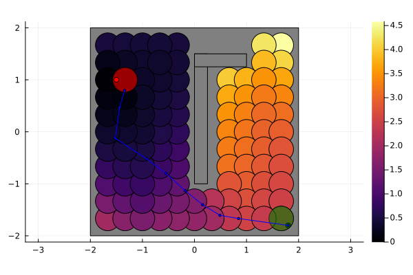

Example: Optimal control of a PWA System by State-feedback Abstractions solved by Ellipsoid abstraction.


This document reproduces [1, Example 2], which is a possible application of state-feedback transition system for the optimal control of piecewise-affine systems. Consider a system $\mathcal{S}:=(\mathcal{X}, \mathcal{U},\rightarrow_F)$ with the transition function
\[\begin{equation} \{A_{\psi(x)}x+B_{\psi(x)}u+g_{\psi(x)}\}\oplus\Omega_{\psi(x)} \end{equation}\]
where $\psi:\mathcal{X}\rightarrow\{1,\dots,N_p\}$ selects one of the $N_p$ subsystems defined by the matrices
\[\begin{equation} A_1=\begin{bmatrix} 1.01 & 0.3\\ -0.1 & 1.01 \end{bmatrix}, ~B_1=\begin{bmatrix} 1&0\\ 0 & 1 \end{bmatrix},~g_1=\begin{bmatrix} -0.1\\-0.1 \end{bmatrix}, \end{equation}\]
\[A_2=A_1^\top,~ A_3=A_1,~B_2=B_3=B_1,~g_2=0\]
and $g_3=-g_1$. These systems are three spiral sources with unstable equilibria at $x_{e1}=[-0.9635~~0.3654]^\top,~x_{e2}=0,$ and $x_{e3}=-x_{e1}$. We also define the additive-noise sets $\Omega_1=\Omega_2=\Omega_3=[-0.05,0.05]^2$, the control-input set $\mathcal{U}=[-0.5,0.5]^2$ and the state space $\mathcal{X}=[-2,2]^2$. The $N_p=3$ partitions of $\mathcal{X}$ are $\mathcal{X}_1= \{x\in\mathcal{X}~:~x_1\leq-1 \},~\mathcal{X}_3= \{x\in\mathcal{X}~:~x_1>1 \},$ and $\mathcal{X}_2=\mathcal{X}\setminus(\mathcal{X}_1\cup\mathcal{X}_3)$. The goal is to bring the state $x$ from the initial set $\mathcal{X}_0$ to a final set $\mathcal{X}_*$, while avoiding the obstacle $\mathcal{O}$, which are to be defined.
First, let us import StaticArrays, LinearAlgebra, Clarabel, JuMP. We also instantiate our optimizers and CDDLib.
using StaticArrays, LinearAlgebra, Plots
using JuMP, Clarabel
import CDDLib
import Random
Random.seed!(0)
using Dionysos
const DI = Dionysos
const UT = DI.Utils
const ST = DI.System
const PR = DI.Problem
const MP = DI.Mapping
const SY = DI.Symbolic
const OP = DI.Optim
const AB = OP.Abstraction
lib = CDDLib.Library() # polyhedron lib
include(joinpath(dirname(dirname(pathof(Dionysos))), "problems", "pwa_sys.jl"))Main.var"Main".PWAsysProblem parameters
Notice that in [1] it was used Wsz = 5 and Usz = 50. These, and other values were changed here to speed up the build time of the documentation.
Usz = 70 # upper limit on |u|, `Usz = 50` in [1]
Wsz = 3 # `Wsz = 5` in [1]
dt = 0.01; # discretization step
concrete_problem =
PWAsys.problem(; lib = lib, dt = dt, Usz = Usz, Wsz = Wsz, simple = false)
concrete_system = concrete_problem.systemHybrid System with automaton HybridSystems.GraphAutomaton{Graphs.SimpleGraphs.SimpleDiGraph{Int64}, Graphs.SimpleGraphs.SimpleEdge{Int64}}(Graphs.SimpleGraphs.SimpleDiGraph{Int64}(7, [[1, 2], [1, 2, 3], [2, 3]], [[1, 2], [1, 2, 3], [2, 3]]), Dict{Graphs.SimpleGraphs.SimpleEdge{Int64}, Dict{Int64, Int64}}(Edge 3 => 2 => Dict(4 => 2), Edge 1 => 2 => Dict(1 => 2), Edge 1 => 1 => Dict(3 => 1), Edge 3 => 3 => Dict(7 => 3), Edge 2 => 2 => Dict(5 => 2), Edge 2 => 1 => Dict(2 => 1), Edge 2 => 3 => Dict(6 => 3)), 7, 7)Abstraction parameters
This is state-space is defined by the HyperRectangle rectX. We also define a control space with the same bounds. This is done because, for a state-feedback abstraction, selecting a controller out of the set of controllers is the same as selecting a destination state out of the set of cells $\mathcal{X}_d$, given it's determinism. To build this deterministic state-feedback abstraction in alternating simulation relation with the system as described in [1, Lemma 1], a set of balls of radius 0.2 covering the state space is adopted as cells $\xi\in\mathcal{X}_d$. We assume that inside cells intersecting the boundary of partitions of $\mathcal{X}$ the selected piecewise-affine mode is the same all over its interior and given by the mode defined at its center. An alternative to this are discussed in [1]. Let us define the corresponding grid:
n_step = 3
origin = SVector(0.0, 0.0)
h = SVector(1.0 / n_step, 1.0 / n_step)
nx = size(concrete_system.resetmaps[1].A, 1)2Ellipsoid matrix P
P = (1 / nx) * diagm((h ./ 2) .^ (-2))
state_grid = MP.GridEllipsoidalRectangular(origin, h, P)Dionysos.Mapping.GridEllipsoidalRectangular{2, Float64}(Dionysos.Mapping.GridFree{2, Float64}([0.0, 0.0], [0.3333333333333333, 0.3333333333333333]), [18.0 0.0; 0.0 18.0])Overapproximation radius (same size as state)
R = h ./ 22-element StaticArraysCore.SVector{2, Float64} with indices SOneTo(2):
0.16666666666666666
0.16666666666666666Optional: same shape for source and target ellipsoids
Pm = P2×2 StaticArraysCore.SMatrix{2, 2, Float64, 4} with indices SOneTo(2)×SOneTo(2):
18.0 0.0
0.0 18.0SDP solver
opt_sdp = optimizer_with_attributes(Clarabel.Optimizer, MOI.Silent() => true)MathOptInterface.OptimizerWithAttributes(Clarabel.MOIwrapper.Optimizer, Pair{MathOptInterface.AbstractOptimizerAttribute, Any}[MathOptInterface.Silent() => true])Instantiate abstraction optimizer
optimizer = MOI.instantiate(AB.UniformEllipsoidAbstraction.Optimizer)
MOI.set(optimizer, MOI.RawOptimizerAttribute("concrete_problem"), concrete_problem)
MOI.set(optimizer, MOI.RawOptimizerAttribute("state_grid"), state_grid)
MOI.set(optimizer, MOI.RawOptimizerAttribute("incl_mode"), MP.INNER)
MOI.set(optimizer, MOI.RawOptimizerAttribute("P"), P)
MOI.set(optimizer, MOI.RawOptimizerAttribute("Pm"), Pm)
MOI.set(optimizer, MOI.RawOptimizerAttribute("R"), R)
MOI.set(optimizer, MOI.RawOptimizerAttribute("sdp_solver"), opt_sdp)
nx, nu = 2, 2
naug = nx + nu + 1
MOI.set(
optimizer,
MOI.RawOptimizerAttribute("Q_aug"),
Matrix{Float64}(LinearAlgebra.I, naug, naug)*(dt^2),
);Build the state-feedback abstraction and solve the optimal control problem by through Dijkstra's algorithm [2, p.86].
MOI.optimize!(optimizer)[ Info: Computing abstraction transitions...
Computing symbolic control system: 12%|██ | ETA: 0:00:08
Computing symbolic control system: 22%|███▌ | ETA: 0:00:08
Computing symbolic control system: 30%|████▉ | ETA: 0:00:08
Computing symbolic control system: 38%|██████▏ | ETA: 0:00:07
Computing symbolic control system: 45%|███████▎ | ETA: 0:00:07
Computing symbolic control system: 54%|████████▋ | ETA: 0:00:06
Computing symbolic control system: 62%|█████████▉ | ETA: 0:00:05
Computing symbolic control system: 70%|███████████▏ | ETA: 0:00:04
Computing symbolic control system: 79%|████████████▋ | ETA: 0:00:03
Computing symbolic control system: 89%|██████████████▎ | ETA: 0:00:01
Computing symbolic control system: 100%|████████████████| Time: 0:00:12
compute_abstract_system_from_concrete_system! terminated: 960 transitions created
┌ Warning: The `state_cost` is not yet fully implemented
└ @ Dionysos.Optim.Abstraction.UniformEllipsoidAbstraction ~/.julia/packages/Dionysos/hq4wD/src/optim/continuous_systems/UniformEllipsoidAbstraction/optimal_control_problem.jl:178
compute_controller_reachability! started
Optimal control terminated with success = true
Reachability: terminated with trueGet the results
abstract_problem_time =
MOI.get(optimizer, MOI.RawOptimizerAttribute("abstract_problem_time_sec"))
abstract_problem = MOI.get(optimizer, MOI.RawOptimizerAttribute("abstract_problem"))
abstract_system = MOI.get(optimizer, MOI.RawOptimizerAttribute("abstract_system"))
concrete_controller = MOI.get(optimizer, MOI.RawOptimizerAttribute("concrete_controller"))
concrete_value_function =
MOI.get(optimizer, MOI.RawOptimizerAttribute("concrete_value_function"))
abstract_value_function =
MOI.get(optimizer, MOI.RawOptimizerAttribute("abstract_value_function"));Simulation
Return pwa mode for a given x
get_mode(x) = findfirst(m -> (x ∈ m.X), concrete_system.resetmaps)get_mode (generic function with 1 method)To simplify : "We assume that inside cells intersecting the boundary of partitions of X the selected piecewise-affine mode is the same all over its interior and given by the mode defined at its center."
function f_eval1(x, u)
states = SY.get_abstract_states(abstract_system, x)
min_state = argmin(s -> abstract_value_function(s), states)
c = SY.get_concrete_state(abstract_system, min_state)
m = get_mode(c)
W = concrete_system.ext[:W]
w = (2 * (rand(2) .^ (1 / 4)) .- 1) .* W[:, 1]
return concrete_system.resetmaps[m].A * x +
concrete_system.resetmaps[m].B * u +
concrete_system.resetmaps[m].c +
w
end
cost_eval(x, u) = UT.function_value(concrete_problem.transition_cost[1][1], x, u)cost_eval (generic function with 1 method)We define the stopping criteria for a simulation
nstep = typeof(concrete_problem.time) == PR.Infinity ? 100 : concrete_problem.time;
function reached(x)
states = SY.get_abstract_states(abstract_system, x)
if !isempty(states ∩ abstract_problem.target_set)
return true
else
return false
end
endreached (generic function with 1 method)We simulate the closed loop trajectory
x0 = concrete_problem.initial_set
x_traj, u_traj = ST.get_closed_loop_trajectory(
concrete_system,
concrete_controller,
x0,
nstep;
stopping = reached,
f_map_override = f_eval1,
)
c_traj, cost_true = ST.get_cost_trajectory(x_traj, u_traj, cost_eval)
cost_bound = concrete_value_function(x0)
println("Goal set reached")
println("Guaranteed cost:\t $(cost_bound)")
println("True cost:\t\t $(cost_true)")Goal set reached
Guaranteed cost: 2.441288266692399
True cost: 2.675627787583985Visualize the results.
Xmap = SY.get_state_mapping(abstract_system)
fig = plot(; aspect_ratio = :equal)
X = concrete_system.ext[:X]
plot!(X; color = :grey, opacity = 1.0, label = "")
plot!(abstract_system; value_function = abstract_value_function)
plot!(
(SY.get_state_set_from_states(abstract_system, abstract_problem.initial_set), Xmap);
color = :green,
efficient = false,
opacity = 0.6,
)
plot!(
(SY.get_state_set_from_states(abstract_system, abstract_problem.target_set), Xmap);
color = :red,
efficient = false,
opacity = 0.6,
)
plot!(UT.DrawPoint(concrete_problem.initial_set); color = :green, opacity = 1.0);
plot!(UT.DrawPoint(concrete_problem.target_set); color = :red, opacity = 1.0)
plot!(x_traj; ms = 2.0, arrows = false, color = :blue)
References
- L. N. Egidio, T. Alves Lima, R. M. Jungers, "State-feedback Abstractions for Optimal Control of Piecewise-affine Systems", IEEE 61st Conference on Decision and Control (CDC), 2022, accepted.
- D. Bertsekas, "Dynamic programming and optimal control". Volume I, Athena scientific, 2012.
This page was generated using Literate.jl.